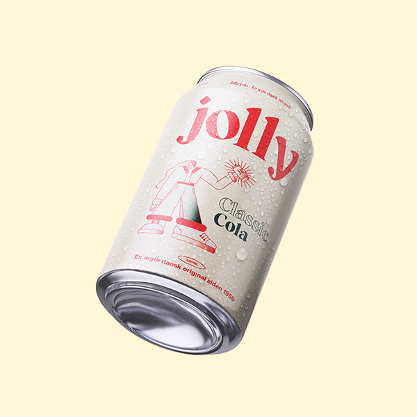

Jolly - Classic Cola
Classic Jolly Cola dåse på 330 ml - den vi alle kender. Produceret siden 1959, og selvfølgelig produceret i Danmark. i Danmark. Brygget på nostalgisk og original vis af Vestfyens Bryggeri.
Fåes som enten single, 6-pack eller kasse.
Indhold: Vand, kuldioxid (E290), farvestof (E150d), surhedsregulerende middel (E338, E331), aroma (bl.a. koffein), sødestoffer (E950, E951), konserveringsmiddel (E211).